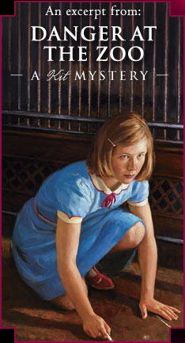

Kit tries to clear her hobo friend, Will, of suspicious activities at the zoo…
Kit walked to the zoo after lunch on Thursday. She hoped Stirling might let her come on one of his tours. Besides, she still had a hunch that her big news story might be found at the zoo, and she wanted to spend more time there.
As she headed down the main path, she saw Stirling and several other boys in Zoo Guides uniforms leaning on the fence by the zebra pen. Stirling waved and came to greet her. “Hey, Kit! I didn’t know you were coming today.”
“I thought I’d take more notes for my article,” she told him. Two articles, if she was lucky!
Stirling took a deep breath. “You can come on one of my tours, if you want.”
“Great. I will!” She nudged him with her elbow. “I’ll ask all kinds of strange questions.”
“You better not! I’ve got exactly one week to get ready for the Fourth of July. Everyone says we’ll have huge crowds that day. It’s the biggest celebration of the summer.” Stirling checked his watch. “Listen, I’m on a break. Rudy told me I could help him prepare the monkeys’ afternoon meals. Want to come?”
Kit grinned. “Let’s go!”
Inside the monkey house, they met Rudy by the Workers Only! door. He led them to a room across from the veterinary area. Apples, oranges, grapes, peanuts, celery, and yams were heaped on a long table in the center of the narrow room. Shelves around the walls held buckets, scoops, and cartons of cereal and bread. The room smelled of musty potatoes and rotting bananas.
“Wow!” Kit stared at the food. “It must be expensive to feed zoo animals. No wonder there was so much talk about closing the zoo when the Depression started.”
Rudy put a bunch of grapes on a scale. “Every animal in the monkey house has a specific diet.” He gestured toward a battered tin bowl holding two eggs and a pear. “That’s for Buddy Boy, the new chimp. We’re still trying to figure out what he likes.”
“Do you know where Otis is?” Stirling asked. “I bet he’d holler if he found us in here.”
Rudy’s smile faded. “I don’t care if Otis hollers. But there is something I should tell you.”
“What?” Unease rippled over Kit’s skin.
“Last night Officer Culpepper found the monkey house unlocked again.”
Kit felt a sinking sensation in her stomach. “Was Will…”
Rudy nodded. “Will was the last one out.” He scooped the grapes from the scale and dropped them into a bucket. “I’m sorry, I know he’s your friend.”
“Did he get fired?” Stirling asked anxiously.
“Not yet. But he got one mean talking-to when he came in at noon. Stirling, can you hand me some apples? I need six.”
Will didn’t do it! Kit thought, remembering the look in Will’s eyes when Superintendent Stephan had scolded him on Monday.
“I want to talk to Will,” she said as Stirling fetched the apples. “Do you know where he is?”
Rudy glanced at a clock on the wall. “I think he’s cleaning cages at the aviaries. He’ll probably take his supper break at five o’clock.”
“Why don’t you meet me again at four o’clock?” Stirling suggested to Kit. “You can come on my last tour, and then we can find Will when he goes on break. Do you mind hanging around for a couple of hours?”
“Not a bit!” Kit assured him. I can put the time to good use, she thought. Something strange was going on at the monkey house. It was time to do some investigating!